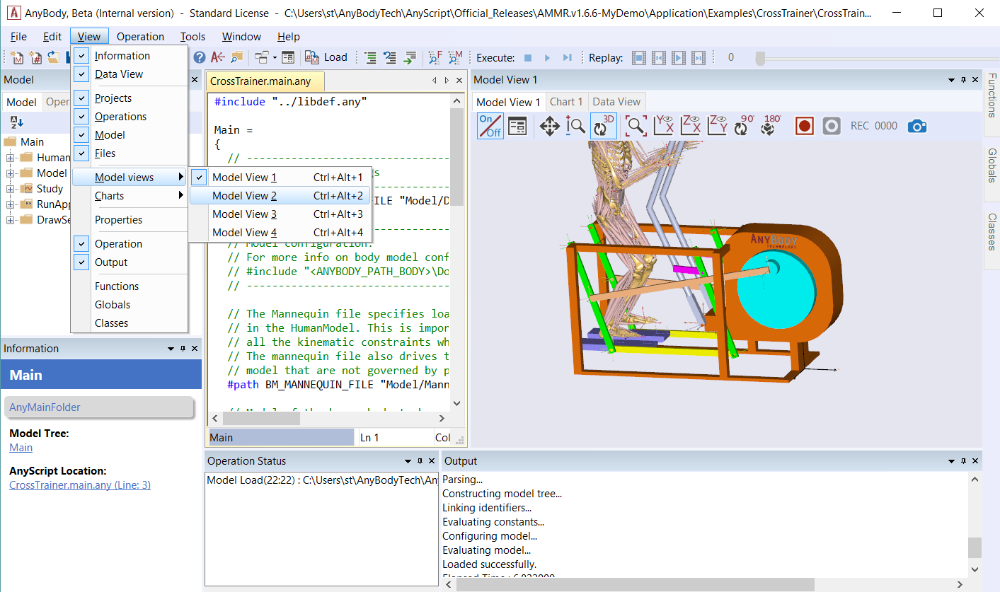
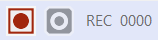
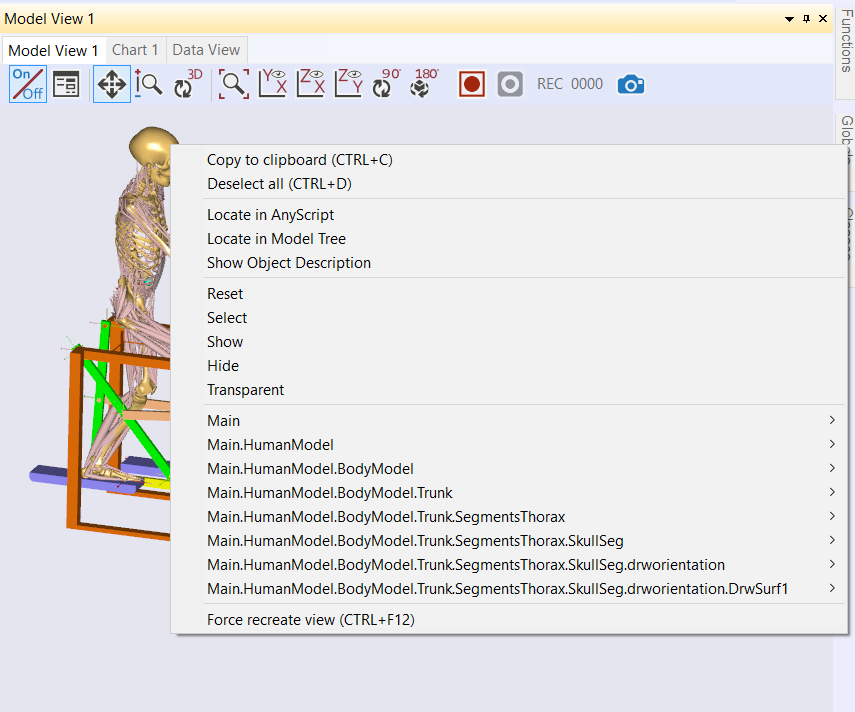
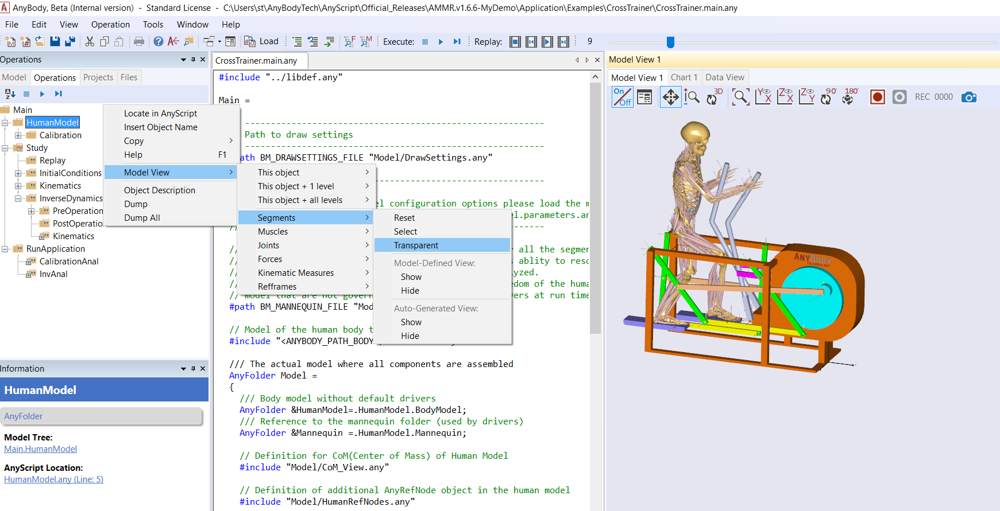

Lesson 2: The Model View Window¶
The Model View is a graphical representation of your AnyBody model. You can open up to four Model Views open at the time, and you can enable these additional windows from View->Model Views.

The Model View only displays a particular type of model elements called “Draw Objects” which are inserted into AnyScript definitions of segments, muscles, nodes, surfaces, etc. For example, see the AnyDrawSeg object used to visualize a segment in this tutorial.
Introduction to Model View¶
The Model View displays and updates the model as the simulation operation proceeds. These updates can involve movements, shapes or colors, etc. that reflect changes such as muscle force fluctuations.
Once the operation has been completed, the replay slider bar at the top lets you freely navigate to any time instant, where both the Model View and values in the Model Tree will be instantly updated.
The Model View allows you to save individual image frames which can subsequently be used to make a video animation playing a speed of your choice.
Running a Simulation¶
Switch to the Operations tab. Select the RunApplication in the tree click the Start operation icon.

Once completed, merely click on InverseDynamics in the Operations tree. You will notice that the replay toolbar slider shifts from gray to blue.
Now try to drag the slider forwards and backward and notice how the Model View changes

If you have run several operations, you can replay them individually by changing the selected operation in the tree.
The Toolbar¶
The Model View has its own toolbar with the following buttons:

- On/Off: When switched off, the other buttons are disabled, and the model is no longer updated. However switching it off may speed up your simulations.
- Properties : Opens the properties window.
- Pan tool: Dragging the cursor with the left mouse button down moves the model image.
- Zoom tool: Hold the left mouse button down, and drag up/down for zooming in/out.
- Spin tool: 3D rotation of the model when left mouse button is held down.
- Zoom all: Refits the view to show all drawing elements.
- Default views: Predefined views on planes: xy plane (standard), yz or xz plane.
- Rotate 90: Rotates the view 90 degrees
- Rotate 180: Rotates the view 180 degrees
- Record start/stop: Starts/stops the video frame capturing. Explained in more detail below.
- Frame count: Displays the number of captured frames during a recording.
- Snapshot: Takes a single snapshot of the model.
Model View Properties¶
The Model View properties contain four groups and should be displayed as a tree in a separate tab. To learn, click on any of the properties with the symbol and hit the F1 key. This should open the AnyScript Reference Manual where sub-properties are defined.
Recording video¶
The allows you to save individual image frames of a motion for subsequent processing into a video animation.
The function works much like a video tape recorder, in the sense that you can push the red record button any time you like, and what happens in the window is subsequently saved for further processing.
Let us see how it works.
- Try clicking the record button.
- A file manager will pop up and request you to select a location and file. We recommend the Jpeg file format due to the lesser memory demand.
- The frame counter will light up, the “Rec” letters flashes and the stop button becomes active indicating that you can push it. Any activity that takes place in the window will now be recorded.
- Try manually spinning the model a little with the mouse and notice how the frame counter adds up. The system only grabs frames when the picture actually changes, for example when you replay your simulation results.
- Push “Stop recording” when you have saved 100 frames. The system will ask you if you want to save the images, say yes. The saved images should look like this: {image_000.jpeg, image_001.jpeg, …, image_099.jpeg]
The AnyBody Modeling System does not provide a video editing facility to process these files into an AVI, MPEG or similar video file format, but many third-party utilities are available for this purpose. For more details, please see https://anyscript.org/tips-n-tricks/creating-videos-from-your-simulations/
Working with the Model View contents¶
We have already mentioned that Model View shows draw objects in the model and that there are two types of these objects:
- Auto-generated draw objects
- Model-defined draw objects
Auto-generated objects are crude representations that are useful during the development, while model-defined objects serve to make the most pleasing views that suit your presentation needs.
All draw objects can appear in the following states:
- Visible or invisible
- Transparent
- Selected
These states you can control while the model is loaded, either directly from Model View or from the Model Tree. We shall return to this in a moment.
Model View State Actions¶
Let us take a look at how you can interact with the states of Model View draw objects. Right-clicking an object in Model View will bring up its context menu.

From here you can show, hide, make transparent, etc. Reset means to bring the object back to its original state (at loading time), which can be either visible or invisible depending on the object. The more “complex looking” options at the bottom of the menu help you navigate to the relevant portions of the Model Tree. Try them out, they are quite intuitive to understand and may help you further on!
Selections in the Model View¶
Graphical objects in the Model View can be selected by single-clicking them with the left mouse button. Doing so will visually mark the object as selected by turning it into a reddish color. Multiple objects can be selected by left-clicking the objects sequentially. Left-clicking a selected object again will remove it from the current selection. The currently selected objects can be deselected by either left-clicking somewhere in the background, or by using the “Deselect all” option in the right-click context menu.
Setting the Model View from the Model Tree¶
The context menu options for setting Model View state action for draw objects is also available from the Model Tree. The context menu in the Model Tree has a Model View item, which includes exactly the same sub-menu we looked at above, please see the image below.

Draw groups¶
You can change the state of a group of drawing objects simultaneously by using “draw groups” that can be created by the class AnyDrawGroup. Please refer to Lesson 7 for an example of their usage.
See also
Next lesson: Lesson 3: The Chart View.
 Please report it here...
Please report it here...{kind=link}